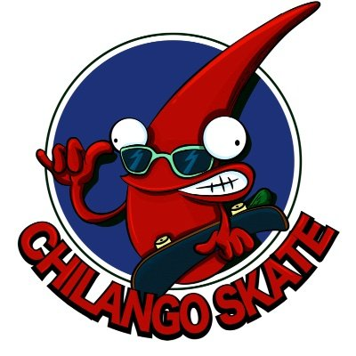
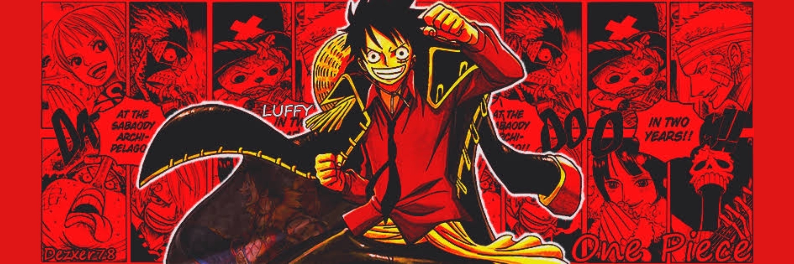

¡Bienvenidos a mi espacio de pasatiempos en la web!
Aquí, en este rincón digital, quiero compartir con ustedes algunas de las actividades que me apasionan y que hacen que mi vida sea más emocionante y creativa. Desde deslizarme sobre el asfalto en mi skateboard hasta sumergirme en el mundo del arte y el entretenimiento, cada pasatiempo me lleva a un lugar único y especial.
¡Así que únanse a mí en este viaje de descubrimiento y diversión! ¡Bienvenidos a mi mundo de pasatiempos!
Skateboarding: Desafiando los Límites y Superando Obstáculos:
Aunque aún estoy aprendiendo y no soy un experto, el
skateboarding
es una de mis grandes pasiones. Cada vez que me subo a mi tabla, siento una mezcla de emoción y libertad mientras intento dominar el ollie y explorar nuevos trucos. Es un recordatorio constante de que con determinación y práctica, podemos superar cualquier obstáculo que se interponga en nuestro camino.
Skateboarding
El skateboarding es un deporte que se basa en la propulsión con un skate: elemento compuesto por una tabla de madera, ejes, rodamientos y ruedas, a la vez que se realizan distintos trucos o maniobras1. Las piezas que componen el skate suelen tener unos estándares para poder realizar las diferentes maniobras.
Chilango Skate
La tienda Skate más grande de México donde encontrarás las mejores marcas de tenis, patinetas, mochilas, ropa y accesorios skate.

Series y Películas: Viajes Emocionantes a través de la Pantalla:
Y por supuesto, no puedo olvidar mi amor por las series y películas. Desde la emocionante aventura de "One Piece" hasta la intensidad de "Breaking Bad" y la acción desenfrenada de "John Wick", cada historia me transporta a un mundo nuevo y emocionante. Ya sea disfrutando de una película de "Rocky Balboa" para encontrar inspiración o sumergiéndome en una serie para desconectar del mundo, el entretenimiento siempre tiene un lugar especial en mi corazón.
A través de esta página web, espero compartir con ustedes mi entusiasmo por estos pasatiempos y crear un espacio donde podamos compartir experiencias, recomendaciones y reflexiones sobre todo lo relacionado con el skateboarding, el arte y el entretenimiento.
Mis series y películas favoritas:
ONE PIECE
One Piece es un manga escrito e ilustrado por el mangaka japonés Eiichirō Oda. Comenzó a publicarse en la revista Japonesa Weekly Shōnen Jump el 22 de julio de 1997 y a la fecha se han publicado 108 volúmenes
100% RECOMENDADO

BRAKING BAD
El profesor calmado de química de una secundaria, Walter White cree que su vida no puede ser peor. Su salario apenas le alcanza para sostener a su familia, una situación que no mejora cuando su esposa da a luz y su hijo adolescente sufre de parálisis cerebral, pero Walter queda anonadado cuando se entera que tiene un cáncer terminal. Al concluir que su enfermedad iba a arruinar financieramente a su familia, él toma una decisión desesperada con el fin de ganar más dinero durante el tiempo que le queda y transforma un viejo vehículo de recreación en un laboratorio de matanfetaminas sobre ruedas.
100% RECOMENDADO
ROCKY IV
El campeón Rocky Balboa va a Siberia para enfrentarse a un colosal oponente soviético: el hombre que mató a Apollo Creed..
100% RECOMENDADO
Arte: Explorando el Mundo a Través de la Creatividad:
Otro de mis pasatiempos favoritos es dibujar y pintar. La expresión artística me permite liberar mi imaginación y explorar nuevas formas de ver el mundo que me rodea. Si no hubiera seguido el camino de la ingeniería, seguramente habría seguido una carrera en el diseño gráfico, fusionando mi amor por el arte con mi pasión por la tecnología.
Páginas sobre Grafiti y Dibujos:
GRAFITI
Te explicamos qué es el graffiti y el origen del término. Además, los tipos de graffiti y la historia de esta técnica artística.
VER MÁS
DIBUJO
Te explicamos qué es el dibujo y por qué es una herramienta de expresión. Tipos de dibujos y elementos que utiliza.
VER MÁS